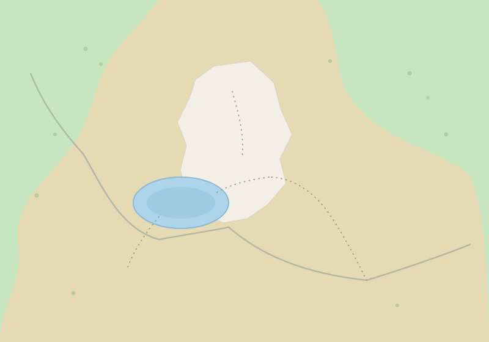

El parque ofrece senderos para distintos niveles de condición física, desde
caminatas cortas junto a la laguna de Limpiopungo hasta el ascenso técnico a la
cumbre del volcán.
Mapa interactivo del parque
Selecciona cualquiera de los puntos del mapa para ver información general
del lugar: qué es, a qué distancia está del control de ingreso y qué nivel
de accesibilidad tiene. El mapa es un esquema de referencia, no a escala.

Lista de puntos de interés
Detalle de rutas
Mostrando 4 de 4 rutas.
Rutas disponibles, distancia, tiempo estimado y dificultad